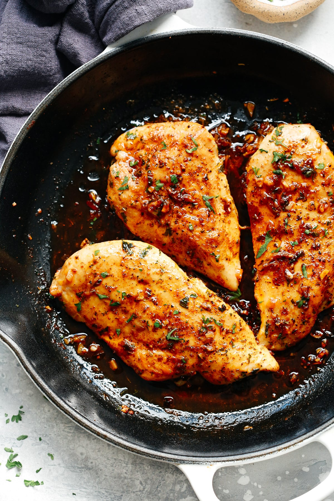

Cast Iron Chicken

Description
This chicken is cooked to perfection. The method? It's cooked 2 ways. gasp First you pop this sucker on the old cast iron skillet for a good sear, 2 min per side. Then you toss 'er in the oven for some tender lovin as she gets nice and juicy and the fat drips off 'er. That's the beauty of the good 'ol cast iron skillet, my friends. It loves a good sauna. This chicken is certified Finger Licking Good.
Ingredients
- Chicken breast
- Spices(I like paprika, a little cayenne, garlic powder, onion powder, and cumin, but go nuts)
- Olive oil
- Cast iron skillet
- Get your oven ripping hot at 400 degrees
- Season your chicken!!!
- Turn on your stove to medium hot. Put skillet on stove to pre-heat. Put a little oil in the skillet.
- Once the oil is smoking, throw down your chicken. Two minutes per side.
- Once that's done, pop the whole thing, skillet, chicken, and all into the oven.
- Cook that sucker until it's got an internal temp of 165 degrees (check after 10 minutes and then every 2 minutes if it's close)
- Pull it out of the oven and remove the chicken from the skillet. Let it rest for 5-10 minutes
- Cut into that sucker and scream